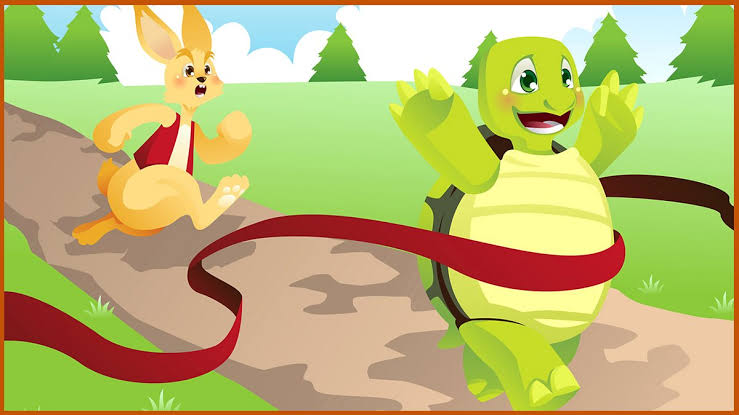

Images
Here we are going to read the same story of rabbit and turtle again but I have provided their pictures as well. Press the Down Arrow and go through it and also observe what NVDA announces when you focus on the image.
The Hare and the Tortoise
This is a story of Hare and Tortoise which gives us an important life lesson.
The story begins when the hare starts ridiculing his friend tortoise, “Hey my dear friend, why are you so slow in moving around? I feel sorry for you for your inability to move swiftly. Look at me, I can reach anywhere within the blink of an eye!”

Hurt and angered by the words of hare, the tortoise replies, “I’m sorry but I see that you are mistaken my dear friend. It is not my inability to move around quickly but it is my strength to work in a steady manner. I will challenge you to a race and let’s see who wins”.
The hare starts laughing uncontrollably and says, “Oh poor thing! Are you challenging me to a race? Why are you so keen on losing against me? Anyway, I don’t want to disappoint you and I certainly accept your challenge”.
The challenge between the two was set and the fox was made the umpire to the race. When the race started, the hare quickly reached the midpoint of the race and seeing the tortoise nowhere closer, the hare decided to rest for a while and fell asleep. The tortoise, on the other hand, keeps walking at its own pace without pausing.
After waking up from a long nap, the hare, thinking the tortoise would be still somewhere behind it, starts marching towards the finish line overconfident about its win. However, much to its surprise, the hare sees the tortoise already crossing the finish line.
Seeing a confused hare, the tortoise says, “My friend winning a race requires focus which I never lost. The steady progress that I made helped me in winning the race. Slow and steady wins the race.” These words of tortoise help the hare in realising its mistake.
Did you observe the image description provided in this story? NVDA will announce “image” when it comes across a picture on a webpage. If there is a description along with the image, NVDA will read that as well.